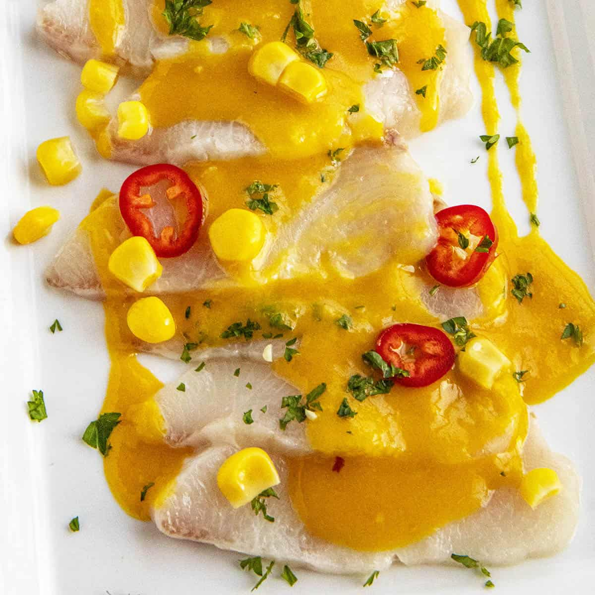

Tiradito

Tiradito Peruvian tiradito is a dish of thinly sliced raw fish served with citrusy, spicy aji amarillo sauce, similar to sashimi or crudo, a perfect appetizer.
If you're a fan of raw or lightly cooked fish dishes like Japanese sashimi, Italian crudo or carpaccio, this Peruvian dish is one that needs to go on your next menu.
It's a bit of a mashup recipe of Japanese and Peruvian cuisine, created when Japanese immigrants began to work with local fish and ingredients.
Ingredients
- 8 ounces (225g) frozen ají amarillo peppers (about 6 peppers) or 1/2 cup (120ml) ají amarillo paste
- 6 ounces (170g) sashimi-grade fish, such as salmon, yellowtail (hamachi), fluke, or corvina
- 3/4 cup (180ml) fresh lime juice from about 10 limes
- 2 medium cloves garlic
- One 1-inch knob peeled fresh ginger (about 1/3 ounce; 10g)
- Kosher salt
- 1 teaspoon minced fresh cilantro leaves and tender stems
- Choclo and/or cooked and peeled sweet potato rounds, for garnish
Steps
- If using frozen ají amarillo chiles: In a medium pot, cover chiles with water (they will float) and bring to a boil. Boil for 10 minutes, stirring pot from time to time to rotate peppers. Remove from heat and drain. Allow to cool.
- Meanwhile, using a sharp slicing knife, slice fish into thin slabs. Arrange slices on plates and transfer to refrigerator.
- In a blender, combine lime juice with garlic and ginger and blend on high speed until garlic and ginger are fully processed. Transfer to a medium mixing bowl. Rinse blender jar.
- Remove and discard seeds and stems from chile peppers. Strip off as much of the chile skin as you can and discard it. Transfer chile flesh to blender jar and blend at high speed, adding only enough water to get things moving, until a smooth purée forms.
- Stir 1/2 cup (120ml) ají amarillo paste into the lime juice until thoroughly combined. (You can add less or more chile paste to your taste, but keep in mind that in addition to heat and flavor, it also gives the sauce viscosity. If you add too little, the sauce will be very thin.) Season with salt. Reserve remaining ají amarillo paste for another use.
- Stir in cilantro. Remove plates from refrigerator and spoon sauce on top of fish, lightly coating it (reserve any remaining sauce for another use). If desired, garnish plates with choclo and/or sweet potato. Serve right away.